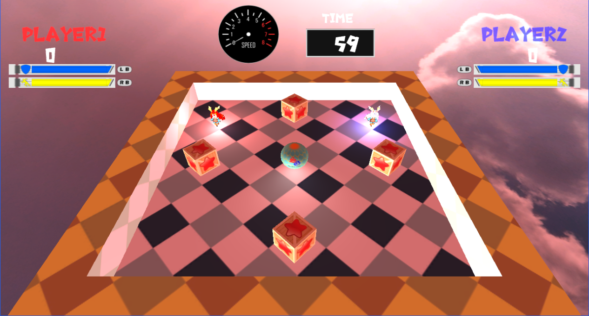
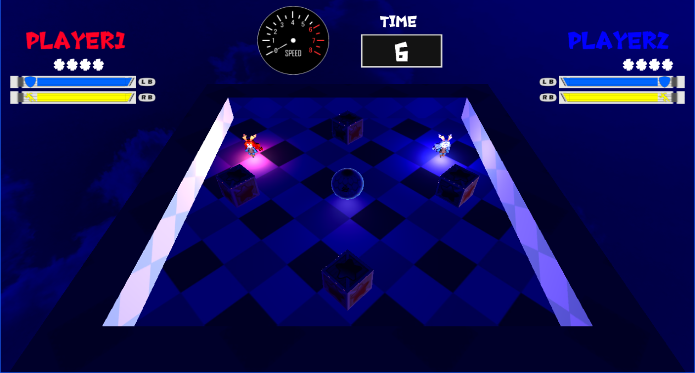

ステージに一つあるボールを蹴って、他のプレイヤーにぶつけてスコアを稼ぎ、誰が一番多くスコアを多く稼げるかを競う対戦アクションゲーム。２０２１年７月の河原学園学園祭に向けて制作し、展示を行った。
ライティングとしてディレクションライトを実装している。拡散反射光はランバート拡散反射モデル、鏡面反射はフォン鏡面反射モデル、環境光は大胆に近似した計算モデルを使用している。
ポイントライトを実装している。ディレクションライトから方向を無くし、座標と影響範囲を設定し、影響範囲内にあるサーフェースに、距離に応じた減衰率を乗算したカラーを加算している。
特定の部分のみを照らす、スポットライトを実装している。ポイントライトに射出方向と射出角度を追加し、サーフェイスへの入射光とスポットライトの射出方向との角度を、内積と逆余弦関数を利用して求める。角度に応じた減衰率を乗算したカラーを加算してスポットライトを表現している。
環境光として半球ライトを実装している。まず、空から照らす光の天球色と、地面から照り返す光の地面色を設定する。地面の法線とサーフェースの法線の内積の結果で、天球色と地面色を線形補完したカラーを環境光として最終的なライティングの結果に加えている。
ライティング無し（左）とライティング有り（右）の比較
メニュー画面ではプレイする人数を選択する事ができる。選択した人数分だけ、キャラクターが画面手前を向き、選択されていないキャラクターは画面奥を向いたままになる。ゲームを開始すると選択した人数分のプレイヤーが飛んでいきゲーム画面に切り替わる。人数選択でも、ゲーム的な演出を追加したいと考え、このようなメニュー画面を作成した。
選択した人数分のキャラクターがこちらを向く
人数を決定すると飛んで行く
ステージに当たっている半球ライトは、時間経過とともに色合いが変化していくように設定した。この色の変化は、変化前の色と変化後の色を設定し、二つの色をタイマーを補完率として線形補完した色を使用する事で表現している。色の変化は１ゲーム中に２回起こり、制限時間の半分を過ぎると二回目の変化が起こる。補完率に使用するタイマーは、残り時間を制限時間で除算した値を使用することで、時間経過とともに、自然に変化する表現になっている。カメラの位置が固定なので、ゲーム画面に少しでも変化があった方が、視覚的に楽しめると考え、ライティングに変化を加えた。
 
時間と共にステージのライティングが変化している様子
プレイヤーにはそれぞれシンボルカラーがあり、ボールを蹴った際に、蹴ったプレイヤーのカラーにボールが光る。これらはポイントライトで表現しており、自分の位置や、ボールの位置、誰が蹴ったボールなのかが分かりやすくなると考え、実装した。プレイヤーが場外から復帰してくる時に、一定時間無敵になるが、その時間を視覚的に分かりやすくするために、無敵時間の間ポイントライトを点滅させている。
ボールが蹴ったプレイヤーの色に光って動いている様子
プレイヤーが動いているボールに接触すると、ボールの速度に応じた力で吹き飛ばされる。一定以上の勢いで吹き飛ばされると、ステージの壁を超えてしまい、そのまま場外へ落ちていってしまう。ステージ端に近いとボールが来る方向を絞れるので身を守りやすいが、もしボールに接触した際に場外に出てしまいやすいという問題もあるので、ボールの速度に気を付けて立ちまわることが求められるようになっている。
速度の乗ったボールにぶつかると場外へ出てしまう
プレイヤーは、ガードを行うことで、ボールに接触しても、吹き飛ばされずに耐えることができる。ガードをしている間は、ガードの耐久値が減り続け、無くなるとガードブレイクし、大きな隙を晒してしまう。また、ボールをガードしたときに、ボールの速度が速すぎても、ガードしきれずにガードブレイクしてしまう。さらに、ガード中は移動が遅くなる欠点があるので、安全な状態で自由に動くことは出来ないようになっている。ガードの出始めにはジャストガード判定があり、成功するとボールを速度関係なく完全に停止させて受け止めることができ、一定時間自分のキック力、ガード耐久値回復速度、スタミナ回復速度が上昇する。ジャストガードで受け止める事ができると、即座に反撃をすることが可能になっている。ガードは便利だが、適切なタイミングで使用しなければ、効果を発揮できないようになっている。
ガードをしている様子
ジャストガード成功時にはパワーアップが発動する
ステージには最大４つのアイテムボックスが配置されており、ボールをアイテムボックスに当てると、開いて中のアイテムを取ることが出来る。アイテムを取ると一定時間能力が上がるので、上がった能力を生かして対戦を有利に進めることが出来る。アイテムボックスにどのアイテムが入っているかはランダムで、アイテムが拾われて一定時間経つと、またアイテムボックスが降って来る。
アイテムボックスの外観
アイテムボックスの開いている様子
プレイヤー全員には、それぞれ現在のスコアが常に表示されている。加点、減点が起こるとその都度表記され、数字もいきなり表示が替わるのではなく、数字がメーターのように変化していくようになっている。また、ゲームの残り時間が僅かになるとスコアの数字が隠され、誰が何位なのかを分からなくすることで、最後までゲームを楽しくプレイして貰えるようにし、リザルト画面で誰が一位なのかをプレイヤー全員で楽しく見れる工夫をした。
加点や減点が起こるとプレイヤーのスコアに表示される
残り時間が僅かになると表示が隠される
リザルト画面では、いきなり全員の順位を出しても、あまり面白味がないので、順位が低いプレイヤーから表示していき、一位のプレイヤーが表示されると同時にファンファーレが鳴るような演出になっている。前述のスコア表示を隠す効果で、リザルト画面でもプレイヤーたちはまだ自分が何位か分からないので、１人ずつ表示することで、プレイヤーが何位なのかを考えさせ、バトル後もゲームにのめりこんでもらえると考え、この演出を実装した。
スコアの低かった順にプレイヤーが、画面右からスライドして表示される
一位のプレイヤーが表示されるとファンファーレと共に紙吹雪で祝福する
隠しコマンドとしてゲームモード切り替えがある。メニュー画面であるボタンを押すと画面が切り替わり、もう一つのモードでゲームをプレイ出来る。制限時間が伸び、アイテムボックスが出現しないようになり、アイテムに頼らず自分の実力だけで対戦するモードで遊ぶことが出来る。アイテムによるランダム要素を嫌う人もいると考えたので、このようなモードを実装した。アイテムボックスにぶつかることによる、ボールの軌道の変化も起こらないので、ボールの動きをよく見て対処する事が求められる、上級者向けのモードになっている。
切り替わったメニュー画面
アイテムボックスが無くなりステージの雰囲気も変化する